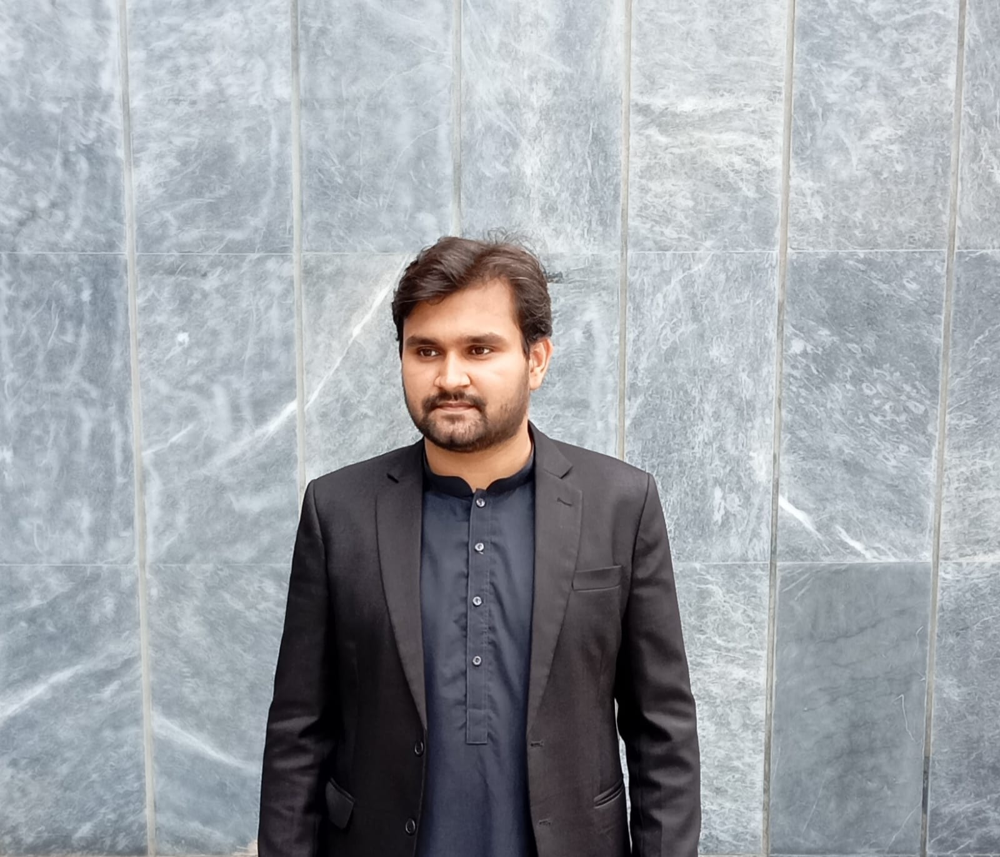
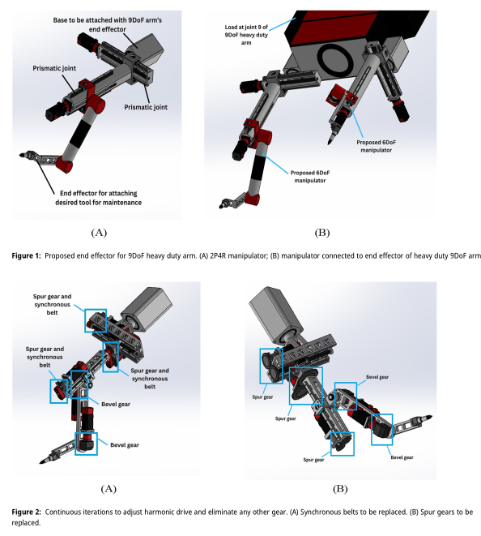
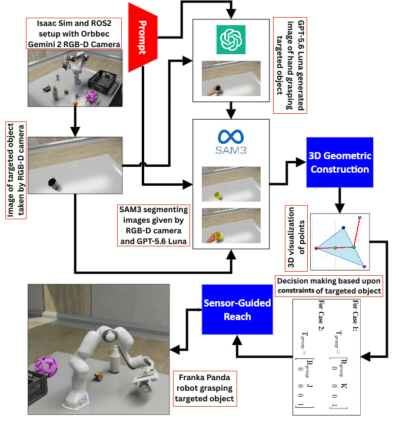
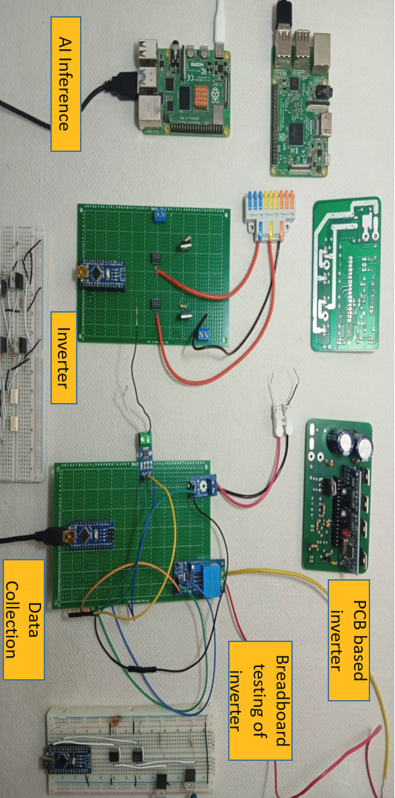

Electrical engineer and robotics researcher specializing in digital twins and synthetic data generation for robots and power equipments. My research interest focus on AI-driven robotics, control systems, and computer vision. Passionate about developing autonomous systems and advancing human-robot interaction through innovative research.
BS Electrical Engineering
Pakistan Institute of Engineering and Applied Sciences (PIEAS)
2022 - 2026

Designed a 2P4R 6DoF manipulator with lower average positioning error compared to traditional 6R configurations, specifically optimized for critical radiological protection applications in fusion reactors.

Developed a novel zero-shot framework leveraging GPT-5.6 Luna and SAM3 for 6-DOF pose estimation without prior training. Achieved 86.9% success rate on 130 diverse objects using generative AI imagination and cross-image geometric transfer, validated on a Franka Panda robot.

Developed a Synthetic Data Generation pipeline in NVIDIA Isaac Sim(Ubuntu 24.04) for non-textured surfaces. A non-textured object is imported in Isaac Sim, then integrating RGB-D camera with ROS2, specific points are caluculated, pattern is drawn by spheres and SAM2 segmentation is done on different vedios to make dataset.
Designed a mining robot and 6DoF arm in SolidWorks, simulated in NVIDIA Isaac Sim with ROS2 bridge integration for applying yolov8 for object detection in the environment while robot moves a specific path.
Designed and simulated a digital clock and 32-bit quadrature encoder using basic logic gates, flip-flops, counters, and comparator ICs in Proteus for accurate timekeeping and position sensing applications.
Implemented signal processing techniques on audio signals using MATLAB/Simulink, applying filtering, transformation, and analysis methods as detailed in Task 1 and Task 2 specifications.
Implemented Maximum Power Point Tracking (MPPT) using Perturb and Observe algorithm in MATLAB/Simulink for optimizing solar panel power output under varying environmental conditions.
Designed a high-efficiency Class AB amplifier using Darlington Pair Vbe multiplier biasing achieving over 60% efficiency, simulated in Proteus with TIP32/32 transistors and implemented on a veroboard.
Built a complete pipeline for manual segmentation using a custom OpenCV polygon tool, training a 10-layer CNN on RTX 5050 GPU to automatically annotate new images for object classification (LaFerrari, Tesla ModelS, etc.).
Developed a dual ESP32 communication system for text exchange between laptops using Serial Bluetooth Terminal, enabling message transfer from mobile devices through Arduino IDE serial monitoring.
Integrated a PIR sensor with ESP32 for intrusion detection, connected via Serial Bluetooth Terminal to enable mobile-based alarm control, creating a cost-effective wireless home security solution.
Designed a 24W DC power supply with 12V output and 2A current capability, implementing capacitive filtering to minimize ripple and ensure stable DC output for powering electronic circuits.